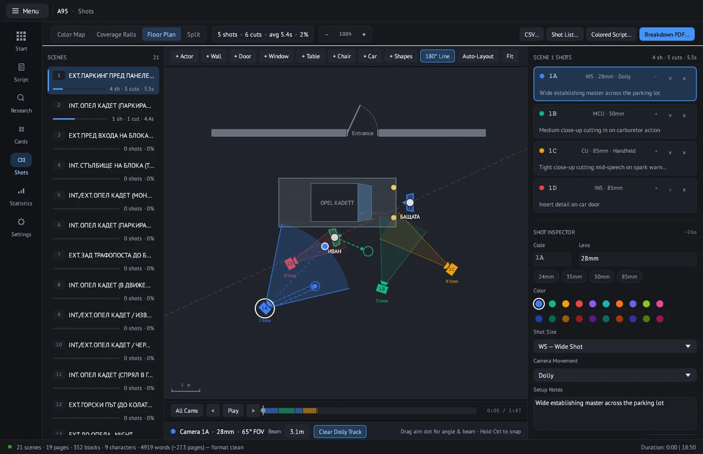
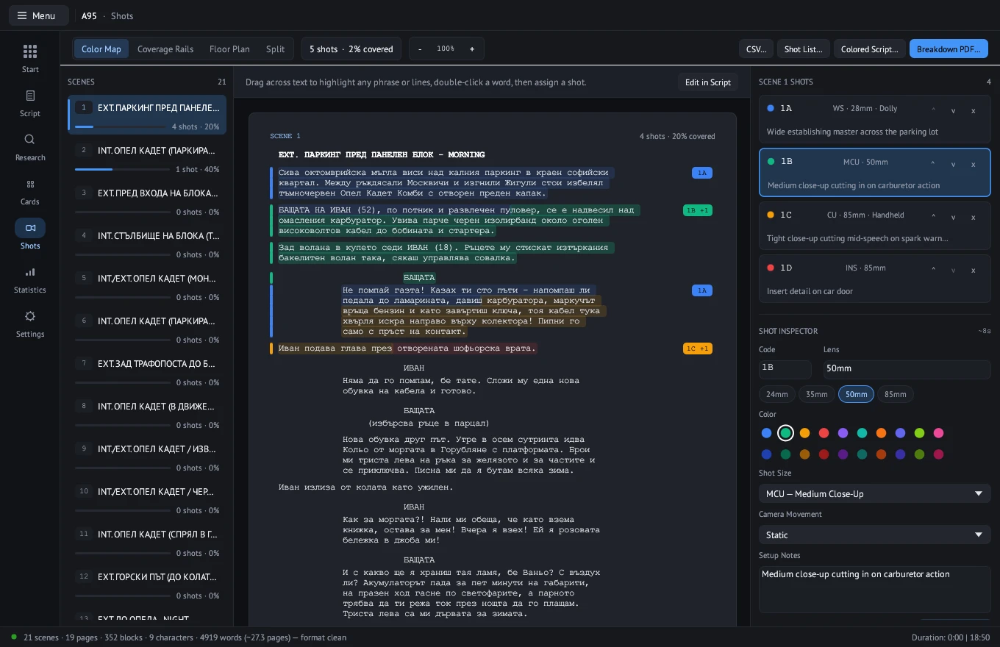
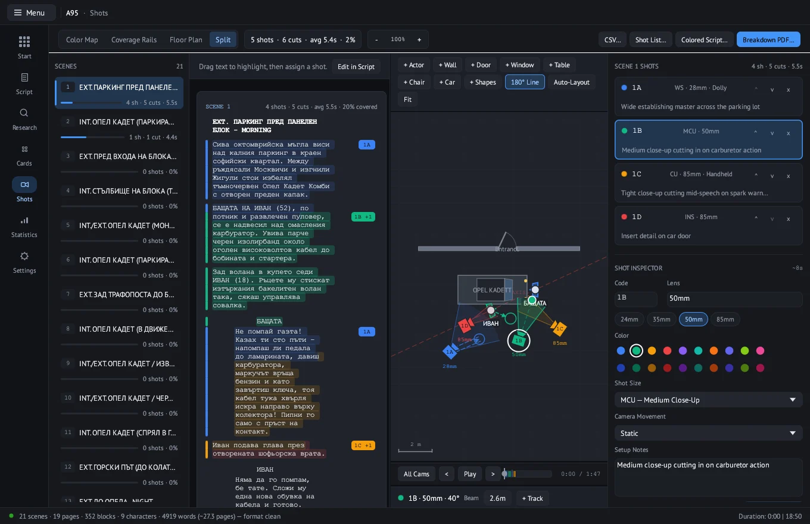
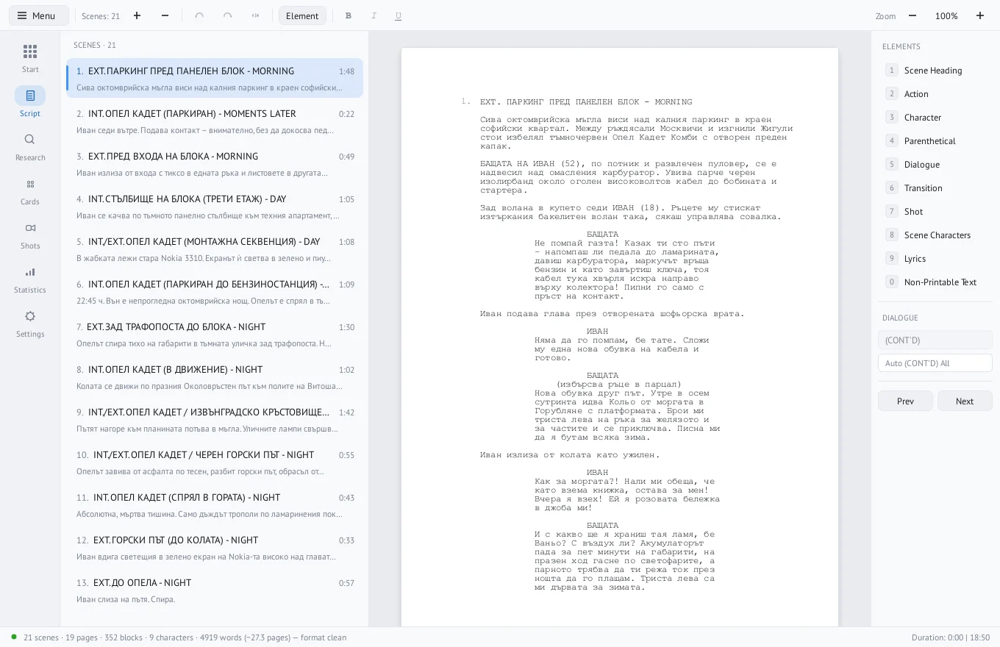

Calm, fast writing
Standard A4 or US Letter pages, smart character and location autocomplete, built-in spellcheck, and 35 light and dark themes.
Free & open source · v0.9.3
A free desktop studio for screenwriting, production revisions, and visual shot planning — with no accounts or subscriptions.
macOS, Windows & Linux · Works completely offline · Your files stay on your computer

What it does
Everything you need to write a screenplay, manage rewrites, and prepare your shot list — without juggling three paid subscriptions.
Standard A4 or US Letter pages, smart character and location autocomplete, built-in spellcheck, and 35 light and dark themes.
Lock pages and scene numbers, track changes with coloured revision sets (Blue, Pink, Yellow…), and compare any two drafts side by side.
Highlight any phrase or line on the script to assign shots, colour-code your coverage, and attach quick camera cues to specific moments.
Place actors, props, and cameras with real lens angles, then scrub the scene timeline to spotlight the active camera at each beat.
Export clean scripts, shot lists, coloured shooting scripts, or a complete Director's Breakdown PDF with floor plans and storyboards.
Your projects live on your own drive with automatic backups and crash recovery. Free forever, with no tracking and no account required.
A look inside




Compatibility
Open your existing scripts without starting over, and share clean files with cast, crew, or co-writers on other apps.
| Format | Open | Export |
|---|---|---|
KIT Scenarist .kitsp | Yes | Yes |
Final Draft .fdx | Yes | Yes |
Fade In .fadein | Yes | Yes |
Fountain .fountain | Yes | Yes |
| PDF (Script, Shot List & Breakdown) | — | Yes |
| CSV & Markdown | — | Yes |
Download
Note: Kino Scenarist isn't code-signed yet. On macOS, right-click the app and choose Open the first time you launch it.
FAQ
Yes. It is completely free and open source — no account, no trial limit, and no subscription.
Yes. You can open and export .fdx, .fadein, .kitsp, and .fountain scripts directly.
Everything stays on your computer inside your project file. Nothing is uploaded to any server, and autosave protects your work.
Open an issue anytime on GitHub.